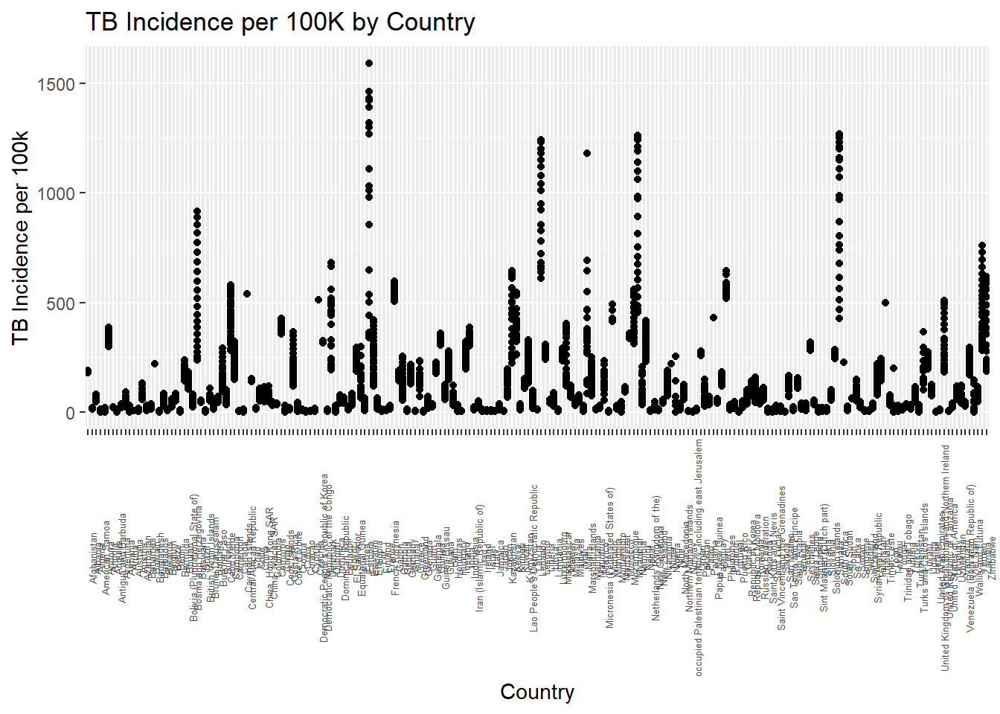
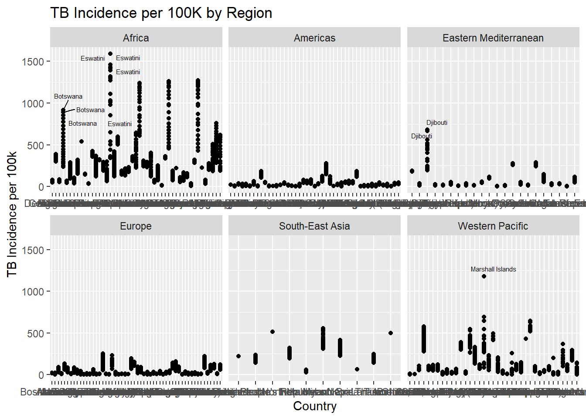
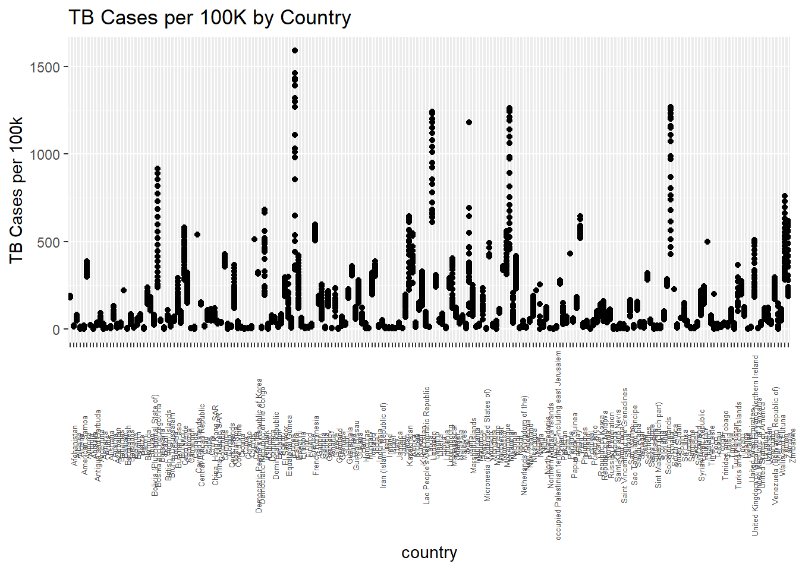
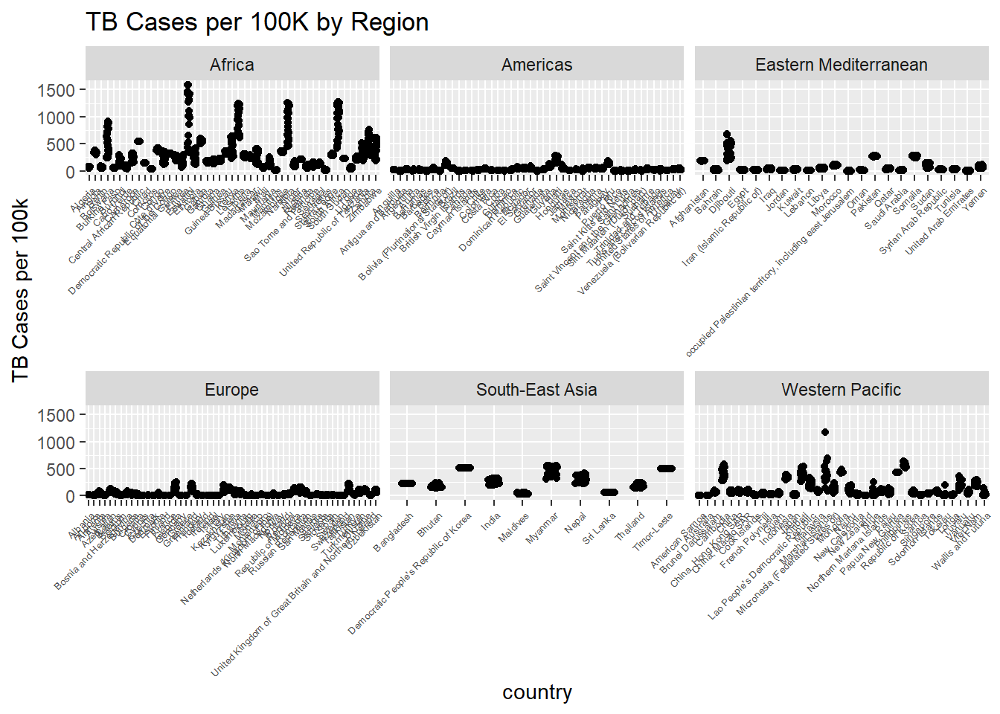

This data is a subset of WHO TB data via the getTBinR package (Sam Abbott) taken from TidyTuesday site. The getTBinR package is no longer supported for this version of R, so using the saved CSV file instead.
#library(getTBinR) #package for WHO data - updated and now unsupportedlibrary(dplyr)library(ggplot2)library(ggrepel)library(readr)# Load the saved subset data (originally from getTBinR:: get_tb_burden())who_tb_data <-read_csv("C:/Users/Ainacology/OneDrive/Desktop/Repositories/Tangalin/TidyTuesday/TidyTue_Nov11/Data/who_tb_data_subset.csv")#tb_burden <- get_tb_burden() # can't use - getTBinR not available for R 4.5.1names(who_tb_data) # see names of columns
# e_mort_100k is Estimated mortality of TB cases (all forms) per 100 000 population# e_mort_exc_tbhiv_100k is Estimated mortality of TB cases (all forms, excluding HIV) per 100 000 population
Plot 1: All Countries
Simple scatter plot showing TB incidence per 100K for each country.
#plotplot1 <-ggplot(who_tb_data, aes(x = country, y = e_inc_100k)) +geom_point() +labs(title ="TB Incidence per 100K by Country", x ="Country", y ="TB Incidence per 100k") +theme(axis.text.x =element_text(angle =90, size =5))print(plot1) #show plot

Plot 2: By Region (Faceted)
Same data but split by WHO region - creates little charts for each region. Using ggrepel to label countries so names don’t overlap.
# Create the plot with facets and repelled country namesplot2 <-ggplot(who_tb_data, aes(x = country, y = e_inc_100k)) +geom_point() +geom_text_repel(aes(label = country), size =2, max.overlaps =10) +# ggrepel so names don't overlaplabs(title ="TB Incidence per 100K by Region", x ="Country", y ="TB Incidence per 100k") +facet_wrap(~g_whoregion, scales ="free_x") # little charts for each regiontheme(axis.text.x =element_blank())
<theme> List of 1
$ axis.text.x: <ggplot2::element_blank>
@ complete: logi FALSE
@ validate: logi TRUE
print(plot2) #show plot

Plot 3: Ranked
Countries ranked by TB incidence. Flip the axes so we can read the country names.
# Create the plot - reorder so highest TB at topplot3 <-ggplot(who_tb_data, aes(x =reorder(country, e_inc_100k), y = e_inc_100k)) +geom_point() +labs(title ="TB Incidence per 100K by Country (Ranked)", x ="Country", y ="TB per 100k") +coord_flip() +# Flip the axes so can read country namestheme(axis.text.y =element_text(size =3)) # Adjust text size for better readabilityprint(plot3) #show plot
plot1 <-ggplot(who_tb_data, aes(x = country, y = e_inc_100k)) +geom_point() +labs(title ="TB Cases per 100K by Country", y ="TB Cases per 100k") +theme(axis.text.x =element_text(angle =90, size =5))plot1

Plot 2: By Region
plot2 <-ggplot(who_tb_data, aes(x = country, y = e_inc_100k)) +geom_jitter(width =0.2) +labs(title ="TB Cases per 100K by Region", y ="TB Cases per 100k") +facet_wrap(~g_whoregion, scales ="free_x") +theme(axis.text.x =element_text(angle =45, hjust =1, size =5))plot2

Plot 3: Ranked
plot3 <-ggplot(who_tb_data, aes(x =reorder(country, e_inc_100k), y = e_inc_100k)) +geom_point() +coord_flip() +labs(title ="TB Cases Ranked by Country", x ="Country", y ="TB per 100k") +theme(axis.text.y =element_text(size =5))plot3